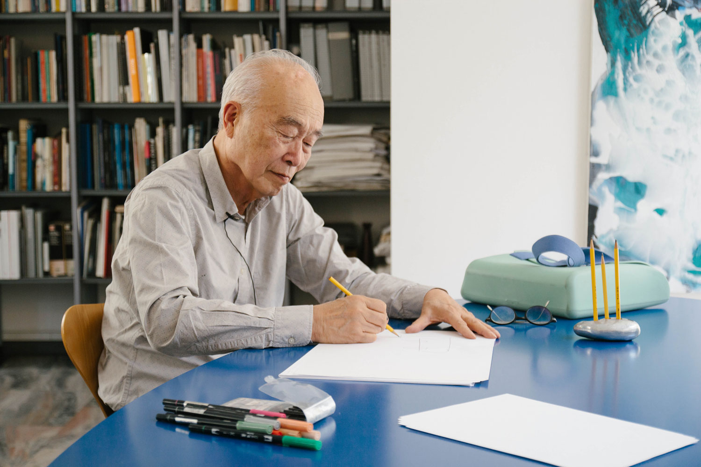
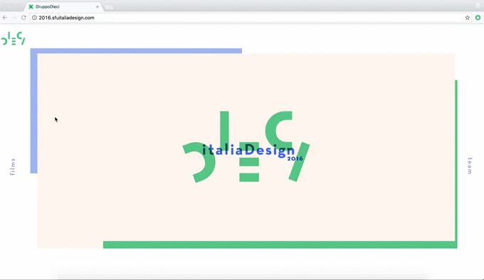
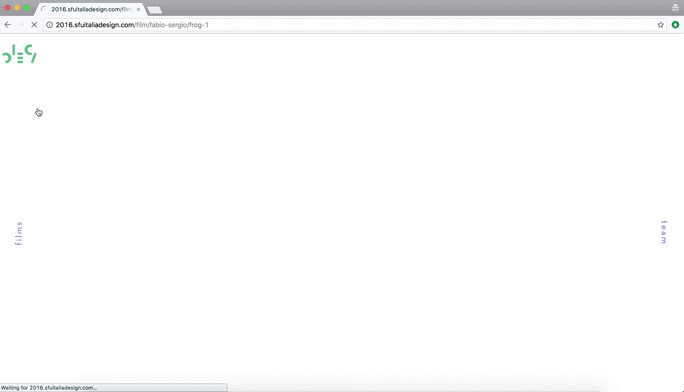
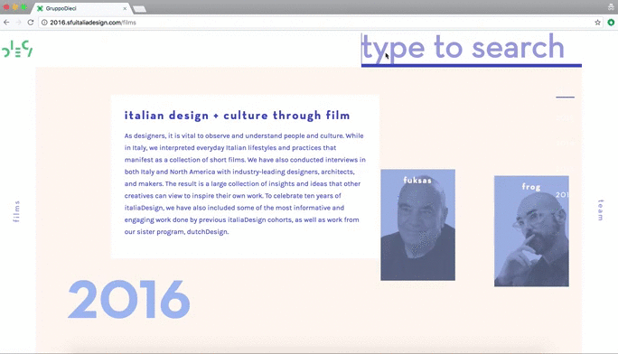

Audio Engineering
Interviewering
Video Editing
Interaction Design
Russell Taylor, Amanda Poh, Maheen Sohail, Kimberly Chan, Shilp Vaishnav, Dilara Dinc, Venus Wan, Haley Clarke, Ty Husband, Nick, and William Leung
In the Summer of 2016, I participated in italiaDesign alongside 10 other selected students. We spent two months in Italy, documenting the projects and approaches of leading Italian designers working in the domain of architecture, industrial design, print design, and experience design. I was responsible for recording audio, conducting interviews, and designing the website which contains our research.
Alongside Nick Doering, my interview with the industrial designer Makio Hasuike in Milan stood out the most. I chose to ignite our discussion with a project-first approach, and branch out into his design philosophies. With the aid of a translator, we engaged in topics such as material affordances, cultural archetypes, and the role of sketching. I was excited to learn about the multi-layered decisions behind his Mix Match bag and Zoom Tube.
Throughout the trip, sketching was a central practise for both the designers we interviewed and ourselves. We were fortunate enough to take sketching lessons in Florence from the renowned architect Andrea Ponsi. His mastery showed me the power and grace of sketching. Personally, I came away with having learned to reduce and simplify my sketch’s lines. I also made a film about why designers sketch.
Our objective was to create a website that could deliver our insights to the greater design community.
Being the tenth italiaDesign group, we saw the opportunity to honour the legacy of this program which has collectively conducted hundreds of valuable interviews. We brought back the strongest films from each year, allowing visitors to access all of these as well as our own.
While our visual designers played with the concept of layering of history seen most prominently in Rome, I worked with Nick to create a feasible grid and scroll-interaction where html elements could slide above others based on scroll.
One of our group's goal was to produce films with shorter durations in order to encourage bite sized viewership. To do this, we decided as a team to edit interviews into several sub-themed chapters. I created a navigational module that could link each chapter to support this content.
With over 100 video interviews across 4 years of field schools, we saw a few opportunities to help viewers discover and follow their interests - lowering the barrier of choosing a video to watch. Instead of navigating back a level to view the chronology of videos, we allowed quick jumps to related videos through tail-end suggestion and autoplays. For viewers that came to the site in search of specific designers or topics, we created a search engine that narrows down the video list and suggest results.

My experience of italiaDesign was much more than documenting interviews. For two months, I became immersed in the many facets of Italy’s culture. It’s a country infamous for its oversaturation of tourist, so I made it a personal objective to find time and space away from this.
I was very comfortable dwelling in local neighbourhoods. I read Machiavelli's Prince. I people-watched. I sketched what I observed. I reached out to ask questions and listen. I tried to find slow-experiences that could stretch my time in Italy, letting me collect far stronger memories. I think they’re unpacking themselves over time.
This is my reflection.